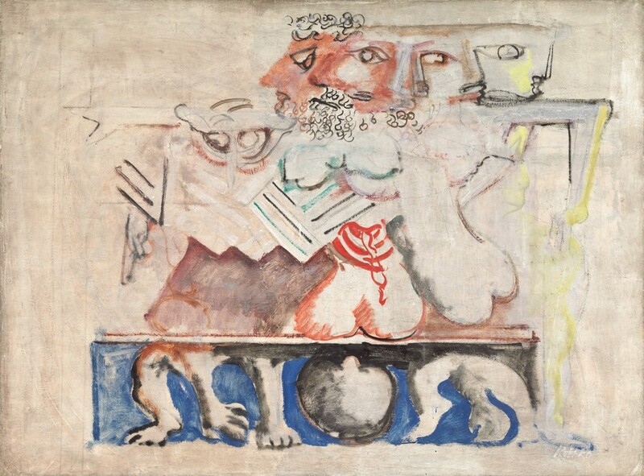
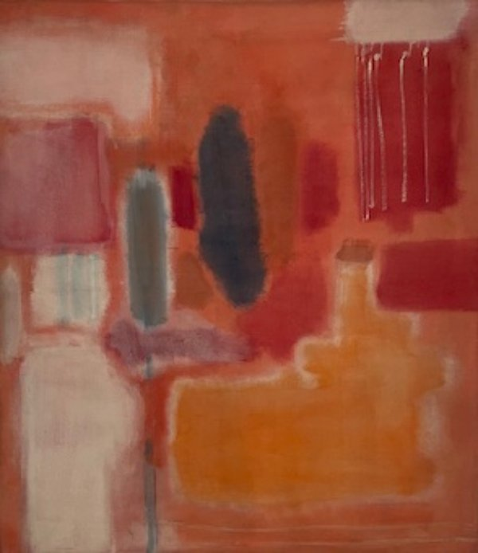
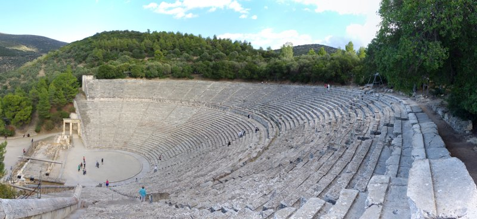
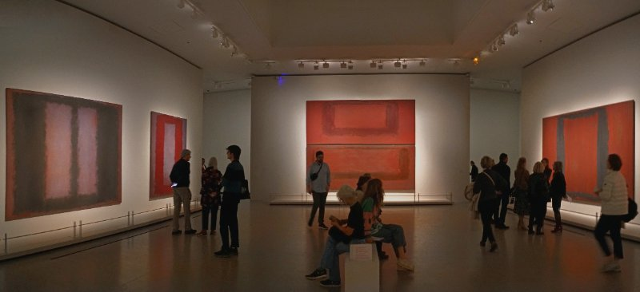
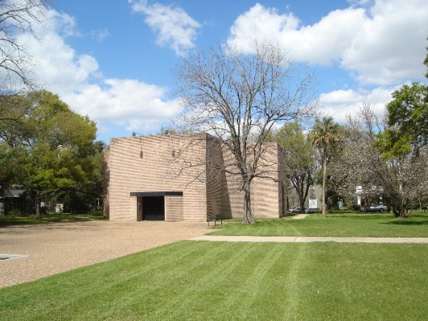
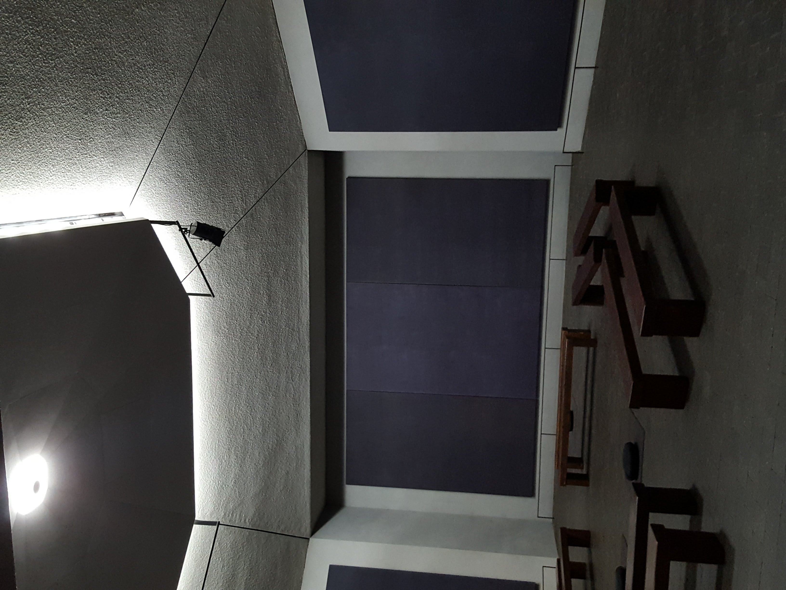

← 처음으로
마크 로스코
"색만으로 사람을 울린 화가"
1903 — 이민자 아이
러시아(現 라트비아)에서 태어나 10세에 미국으로
유대인 가정에서 태어나, 10세에 오리건으로 이민. 예일 입학 후 2년 만에 자퇴하고 뉴욕에서 그림을 시작했다.

Antigone, c.1941 — 그리스 비극에서 영감받은 초기 신화작품
1949 — "떠다니는 사각형" 탄생
반투명 색면이 겹겹이 쌓인 구도를 완성
얼핏 단순해 보이지만,
시간이 지나면서 감정이 풀려나온다.
시간이 지나면서 감정이 풀려나온다.
"그림은 즉각적이지 않다.
시간을 두고 펼쳐지도록 만들었다."
시간을 두고 펼쳐지도록 만들었다."

No. 9, 1948 — 초기 색면 실험
대표작 분석

Orange and Yellow, 1956 · Buffalo AKG Art Museum
색채
원색이 아닌, 살아 있었던 색. 시간이 지나면 바랠 것 같은 깊이.
구도
두 색면이 떠 있다. 끝까지 닿지 않아, 관객이 그 사이에 서게 된다.
붓터치
찾을 수 없다. 화가의 손길이 아니라 색 자체의 목소리.
비틀기
보편적 색 감정을 의도적으로 비틀어, 설명할 수 없는 감정을 만든다.
스케일
거대한 캔버스. 보는 것이 아니라 거주하는 경험.
로스코의 철학

에피다우로스 고대 극장, 기원전 4세기 · 그리스 비극이 올려진 무대
미술관
그림이 아니라 '경험'. 지적 활동이 아닌 신체적 경험이었다.
영감
그리스 비극 — 오이디푸스, 프로메테우스 같은 이야기에서 슬픔, 황홀, 운명 같은 기본적인 감정을 배웠다.
기본 감정
"오직 비극적이고 시대를 초월하는 주제만이 유효하다."
색의 언어
형태는 시대에 묶인다. 하지만 색만 남기면, 시대가 사라진다.
저항
이론이 아닌 감정. 설명이 아닌 경험. 지식이 아닌 울음.
⭐ 1958~60 — 시즌그램 사건
거액의 의뢰를 돌려준 화가
뉴욕 최고급 레스토랑 "Four Seasons"에서 벽화 의뢰를 받아 수개월간 작업했다. 하지만 레스토랑을 직접 방문한 순간 깨달았다.
"부자들이 와인 마시며 장식품으로 볼 장소가 아니다"
전액 환불 + 작품 회수 → 9점을 런던 테이트 갤러리에 기증. 돈보다 감정, 상업보다 진정성을 선택한 사람.

Seagram Murals, 1958-59 · 현재 Tate Modern, London
1964~71 — 로스코 채플
휴스턴에 명상 공간을 설계하다
거의 검정/보랏빛의 벽화 14점. 시각보다 영적 경험에 가까운 공간. 1970년 2월 25일 자살로 생을 마감했지만, 채플은 오늘날까지 전 세계인의 치유 공간으로 남아있다.
"침묵이야말로 가장 정확하다. (Silence is so accurate.)"


The Rothko Chapel 외관 / 내부 · 14점의 벽화가 벽면 전체를 채운 명상 공간 · Houston, Texas
왜 로스코인가
"기본 감정을 표현한다" → 색 선택 ↔ 감정 매핑
"시간이 지나야 펼쳐진다" → 천천히 생성되는 그림 경험
돈보다 진정성 → 상업 아닌 치유가 목적
어두운 색면도 위로가 된다 → 슬픔/고독도 치유의 재료
"시간이 지나야 펼쳐진다" → 천천히 생성되는 그림 경험
돈보다 진정성 → 상업 아닌 치유가 목적
어두운 색면도 위로가 된다 → 슬픔/고독도 치유의 재료